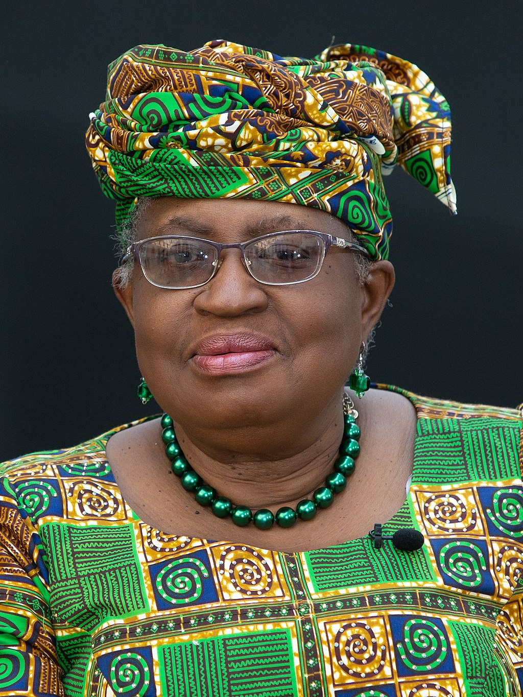
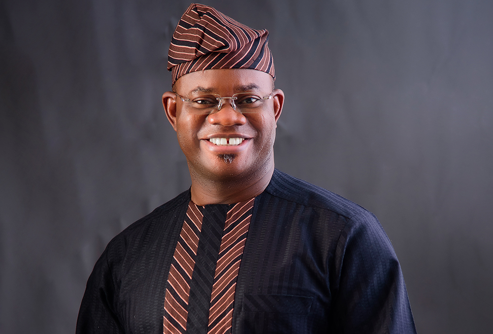
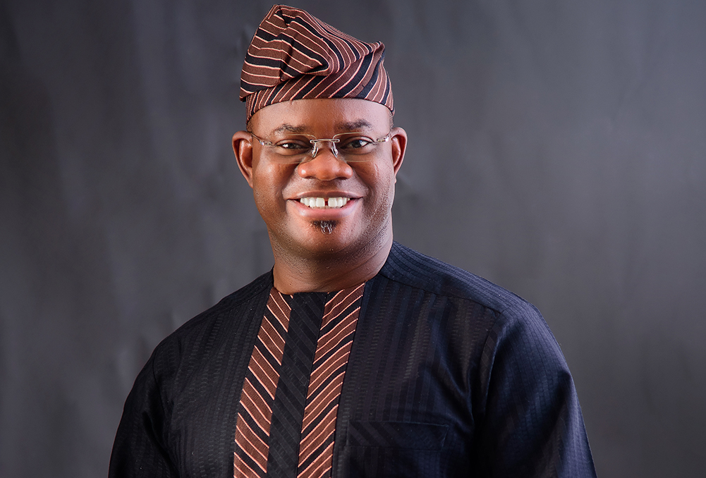
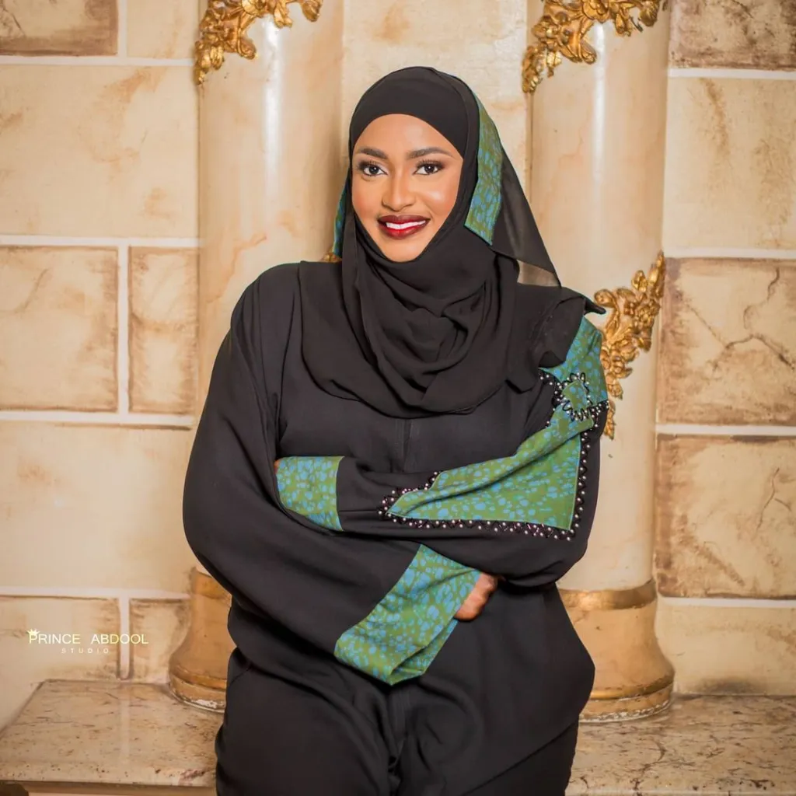
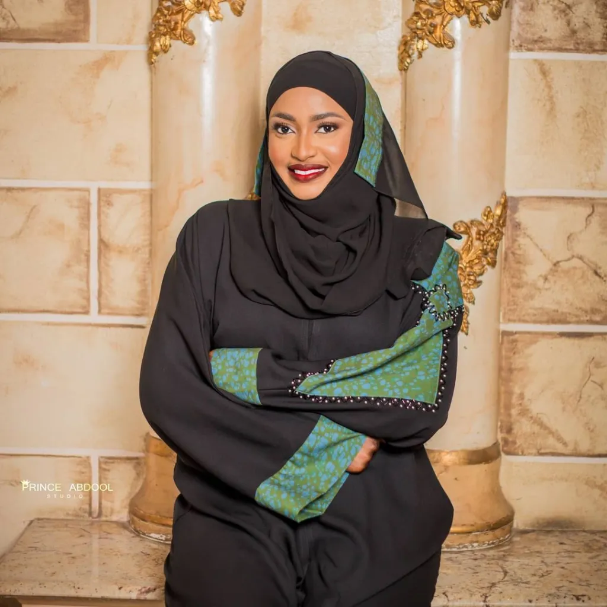
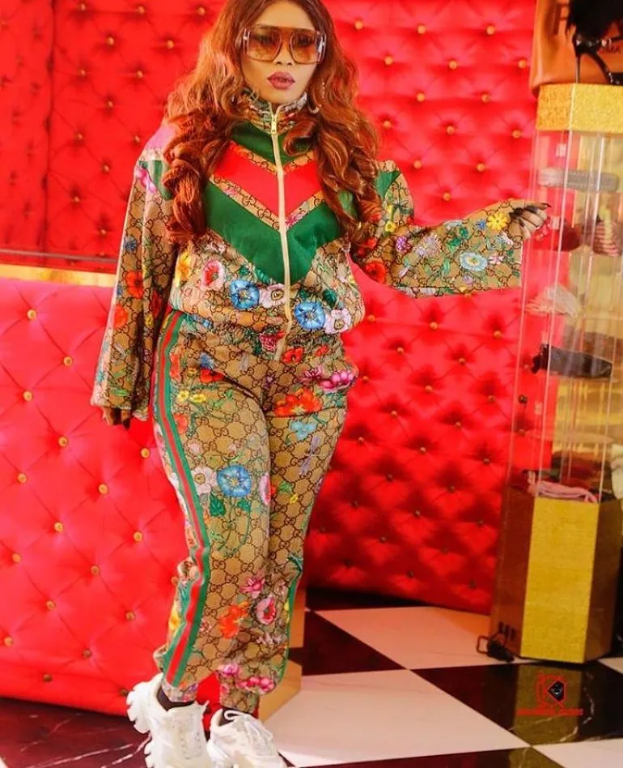
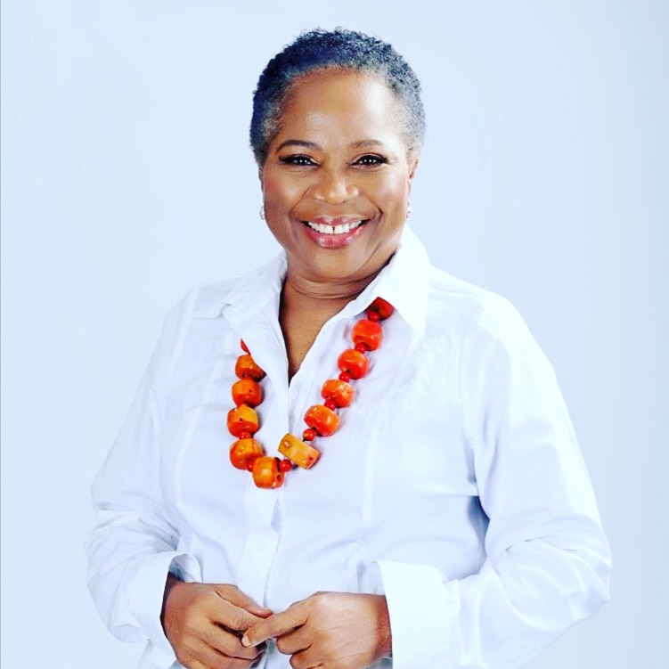
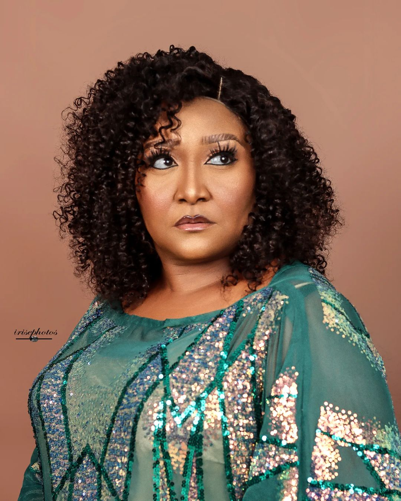

Geo-political zones in Nigeria
South West

- Lagos
- Oyo
- Ondo
- Osun
South South
- Edo
- Delta
- Rivers
- Bayelsa
North Central
 

- Kwara
- Kogi
- Benue
- Nassara
North East
 

- Adamawa
- Bauchi
- Borno
- Yobe
North West
- Jigawa
- Kaduna
- Kano
- Kebbi
South East
 - Abia
- Anambra
- Ebonyi
- Enugu